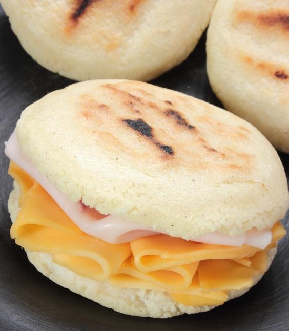
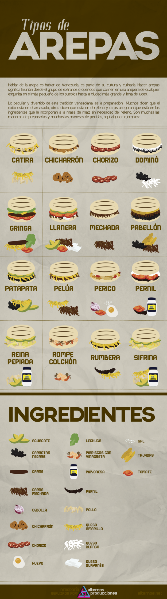

Arepa Con Queso
Back to main

IT'S CORN!
The best comfort food which is also super-nutritious.
I will teach you how to make this delicious and easy meal that hits the spot ANYTIME.
Ingredients
- Pre-cooked Corn Flour, preferibly Harina Pan (Note: Can be also tamale flour)
- Water
- Salt
- Cheese of your preference
- Ham or any other meat you got laying in the fridge (Note: Next to Puttanesca Pasta, this is the second best thing to do with leftovers)
- Butter or any dressing of your choice
Steps
- Mix the corn-flour with water and salt until reaching a moldable texture, like dough or playdough, I don't judge.
- Make little round circles about the size of a burger patty, up to you how thicc. Remember you will open to fill so try not to make them too thin.
- Slap them onto a pan, you can use oil and medium flame, or no oil and low flame. Deep fried is also an option.
- Once you reached a nice golden color, or you can see that it's solid, let them cool for a little bit.
- Slice that delicious arepa in the middle and stuff it with whatever you got lying around.
- Try to eat only 2... try.
Remember, the secret here is creativity. Here's a menu of the classic Venezuelan arepas.
Go loco!
